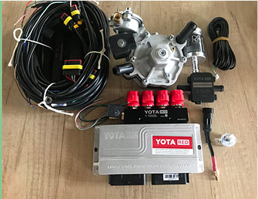
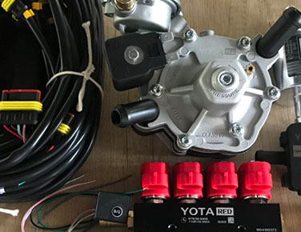
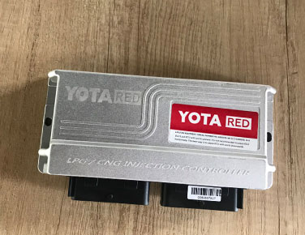
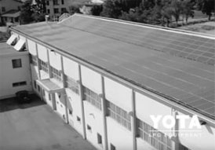
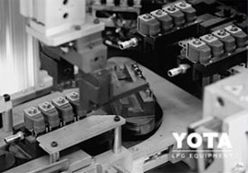
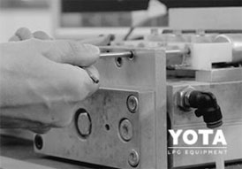
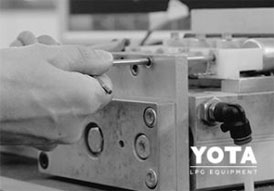

Современная электроника YOTA RED 4 и 6 цилиндров
Универсальный блок
- Пыле и влагозащищенный металлический корпус
- Работа со стандартными, турбо и роторно-поршневыми двигателями
- Совместимость с любым оборудованием (более 25 видов форсунок и 3 вида датчик температуры газа).
- Возможность выбора корректного источника сигнала оборотов двигателя. Программа может считывать данные с разных источников, в том числе и датчика распредвала.
Интеллектуальная система автоадаптации ISA 2
- 1. При запуске авто система автоматически собирает бензиновую карту
- 2. Переключает авто на газ
- 3. Постоянно подстраивает газовую карту под бензиновую в разных режимах работы двигателя
- 4. Настройка системы проходит гораздо проще и с максимально точной дозировкой газа.
После создания бензиновой карты система
ISA2 автоматически переключает контроллер на газовое питание.
С этого момента самонастройка осуществляется путём постоянного
сравнения работы двигателя на газе и его параметров (нагрузки и скорости вращения)
с ранее сформированной эталонной бензиновой картой.
Надежные комплектующие
- Кнопка с индикатором уровня топлива и звуковым зуммером
- Встроенный эмулятор отключения инжектора с разъемом Europa/Bosh
- Простая и понятная проводка – ничего лишнего
-
Самый надежный МАП-сенсор PS-02:
Диапазон измерения давления 0-2,5 Bar
Точность измерения давления 1.5%
Датчик температуры газа ZK
Диапазон раб. температур -40 0С до 125 0С
Больше функций – больше мощности
- Возможность корректировки впрыска по дополнительной карте RPM
- Максимальное количество запусков в аварийном режиме
- Коррекция смеси при cut off. При выключении бензиновых форсунок давление на редукторе может вырасти. Для корректного возврата на газ и необходима эта особенная коррекция.
- Точное отображение данных на осциллографе – визуализация всех процессов двигателя на одном экране осциллографа.
Полный комплект подкапотного оборудования
-
Блок управления
-
Редуктор
-
Датчик уровня газа
-
Сервисная книжка
-
Форсунки
-
Map сенсор PS-02
-
Переключатель вида топлива
3 варианта комплектации

MINI KIT №1
- Форсунки CONCORD
- Редуктор COMPACT
MINI KIT №2
- Форсунки YOTA RED 3 Om
- Редуктор YOTA RED
MINI KIT №3
- Форсунки CONCORD
- Редуктор YOTA RED
Отзывы мастеров ГБО о YOTA RED
Интенсив по установке и настройке
Специально для наших клиентов мы запускаем серию семинаров по всей Украине. Узнай дату проведения в своем городе. Следите за обновлениями на нашей страничке Facebook.
Современная электроника YOTA RED 4 и 6 цилиндров
  Душа моя озарена неземной радостью, как эти чудесные весенние утра, которыми я наслаждаюсь от всего сердца. Я совсем один и блаженствую в здешнем краю, словно созданном для таких, как я. Я так счастлив, мой друг, так упоен ощущением покоя, что искусство мое страдает от этого. Ни одного штриха не мог бы я сделать, а никогда не был таким большим художником, как в эти минуты. Когда от милой моей долины поднимается пар и полдневное солнце стоит над непроницаемой чащей темного леса и лишь редкий луч проскальзывает в его святая святых, а я лежу в высокой траве у быстрого ручья и, прильнув к земле, вижу тысячи всевозможных былинок и чувствую, как близок моему сердцу крошечный мирок, что снует между стебельками, наблюдаю эти неисчислимые, непостижимые разновидности червяков и мошек и чувствую близость всемогущего, создавшего нас по своему подобию, веяние вселюбящего, судившего нам парить в вечном блаженстве, когда взор мой туманится и все вокруг меня и небо надо мной запечатлены в моей душе, точно образ возлюбленной, - тогда, дорогой друг, меня часто томит мысль: "Ах! Как бы выразить, как бы вдохнуть в рисунок то, что так полно, так трепетно живет во мне, запечатлеть отражение моей души, как душа моя - отражение предвечного бога!" Друг
Душа моя озарена неземной радостью, как эти чудесные весенние утра, которыми я наслаждаюсь от всего сердца. Я совсем один и блаженствую в здешнем краю, словно созданном для таких, как я. Я так счастлив, мой друг, так упоен ощущением покоя, что искусство мое страдает от этого. Ни одного штриха не мог бы я сделать, а никогда не был таким большим художником, как в эти минуты. Когда от милой моей долины поднимается пар и полдневное солнце стоит над непроницаемой чащей темного леса и лишь редкий луч проскальзывает в его святая святых, а я лежу в высокой траве у быстрого ручья и, прильнув к земле, вижу тысячи всевозможных былинок и чувствую, как близок моему сердцу крошечный мирок, что снует между стебельками, наблюдаю эти неисчислимые, непостижимые разновидности червяков и мошек и чувствую близость всемогущего, создавшего нас по своему подобию, веяние вселюбящего, судившего нам парить в вечном блаженстве, когда взор мой туманится и все вокруг меня и небо надо мной запечатлены в моей душе, точно образ возлюбленной, - тогда, дорогой друг, меня часто томит мысль: "Ах! Как бы выразить, как бы вдохнуть в рисунок то, что так полно, так трепетно живет во мне, запечатлеть отражение моей души, как душа моя - отражение предвечного бога!" Друг
Душа моя озарена неземной радостью, как эти чудесные весенние утра, которыми я наслаждаюсь от всего сердца. Я совсем один и блаженствую в здешнем краю, словно созданном для таких, как я. Я так счастлив, мой друг, так упоен ощущением покоя, что искусство мое страдает от этого. Ни одного штриха не мог бы я сделать, а никогда не был таким большим художником, как в эти минуты. Когда от милой моей долины поднимается пар и полдневное солнце стоит над непроницаемой чащей темного леса и лишь редкий луч проскальзывает в его святая святых, а я лежу в высокой траве у быстрого ручья и, прильнув к земле, вижу тысячи всевозможных былинок и чувствую, как близок моему сердцу крошечный мирок, что снует между стебельками, наблюдаю эти неисчислимые, непостижимые разновидности червяков и мошек и чувствую близость всемогущего, создавшего нас по своему подобию, веяние вселюбящего, судившего нам парить в вечном блаженстве, когда взор мой туманится и все вокруг меня и небо надо мной запечатлены в моей душе, точно образ возлюбленной, - тогда, дорогой друг, меня часто томит мысль: "Ах! Как бы выразить, как бы вдохнуть в рисунок то, что так полно, так трепетно живет во мне, запечатлеть отражение моей души, как душа моя - отражение предвечного бога!" Друг
  
